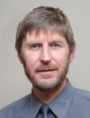

Dr. Cepinskas is a Director and a Leading Scientist at the Centre for Critical Illness Research at the Lawson Health Research Institute, London, Ontario, Canada and an Associate Professor at the Department of Medical Biophysics, Schulich School of Medicine & Dentistry, Western University, London, Ontario, Canada.
Dr. Cepinskas received his D.V.M. from Lithuanian Academy of Veterinary Medicine and his Ph.D. from Lithuanian Academy of Sciences. He received his post-doctoral training at the Department of Molecular and Cellular Physiology, Shreveport, LA, USA.
Dr. Cepinskas’s research is focused on the initiating and regulatory mechanisms of systemic inflammation (sepsis), ischemia/reperfusion injury and treatment of the latter disorders. In particular, reactive oxygen/nitrogen species-induced activation/signaling/injury of neutrophilic leukocytes and vascular endothelial cells, and leukocyte-endothelial cell inflammatory interactions in various organs are the prime subjects of his research. Dr. Cepinskas’s research on vascular endothelial cell and leukocyte inflammatory interactions and modulation of the systemic inflammation by carbon monoxide-releasing molecules (CORMs) has been widely recognized.
Dr. Cepinskas is a recipient of numerous awards including Perkin's Memorial Award (American Physiological Society) and National Young Investigator Award from Canadian Institutes of Health Research (CIHR) and Canadian Intensive Care Foundation. He is a member of the Heart and Stroke Foundation of Canada Scientific Review Committee and serves as an ad-hoc reviewer for major research funding agencies including CIHR, Natural Sciences and Engineering Research Council of Canada (NSERC) and MRC (UK). In addition, he serves as an Associate Editor for several peer-reviewed research journals.